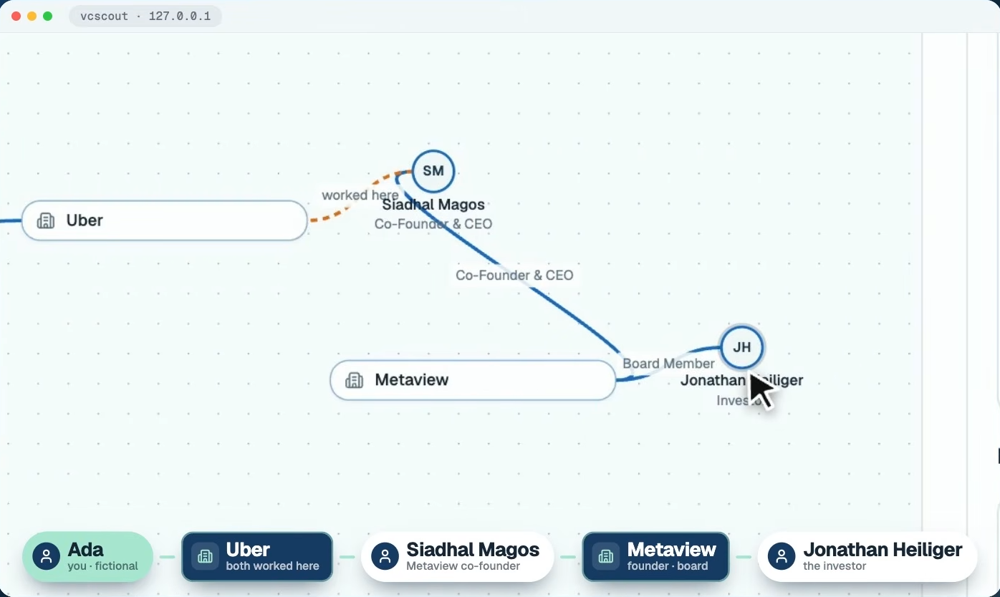
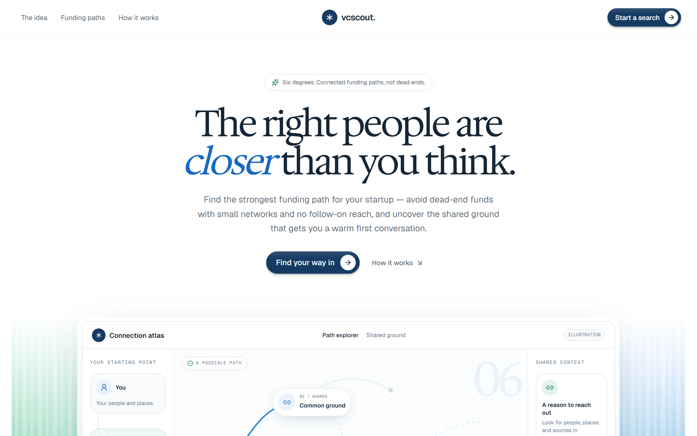
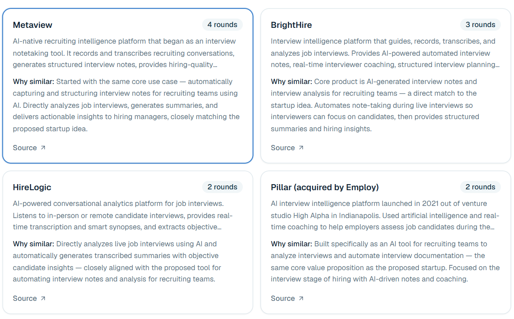
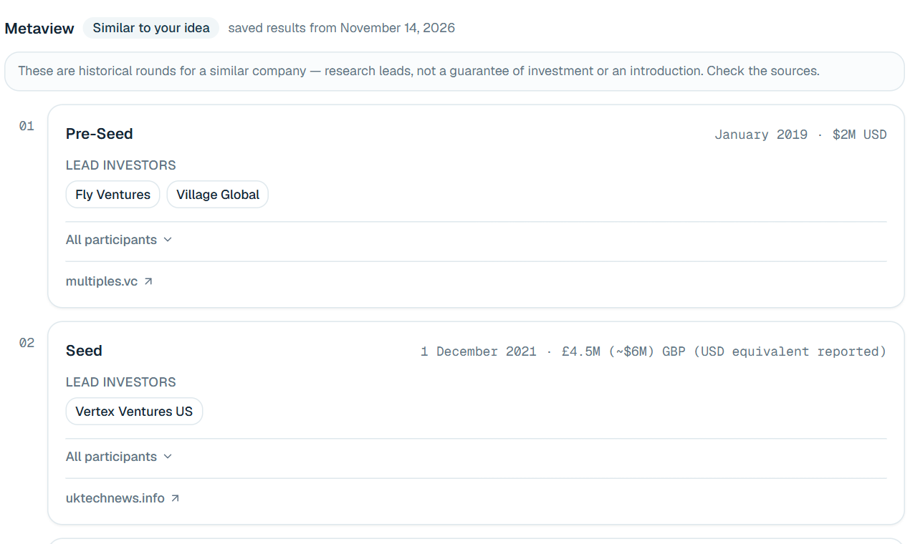
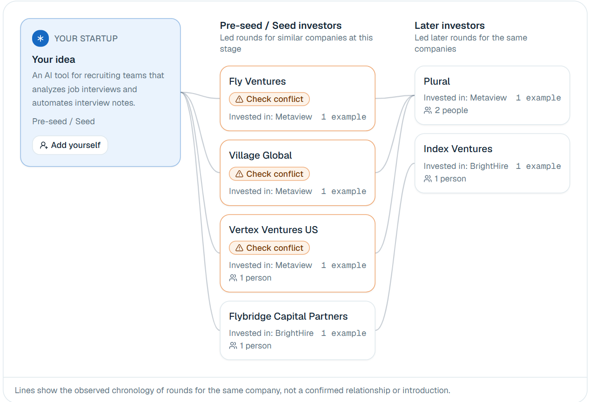
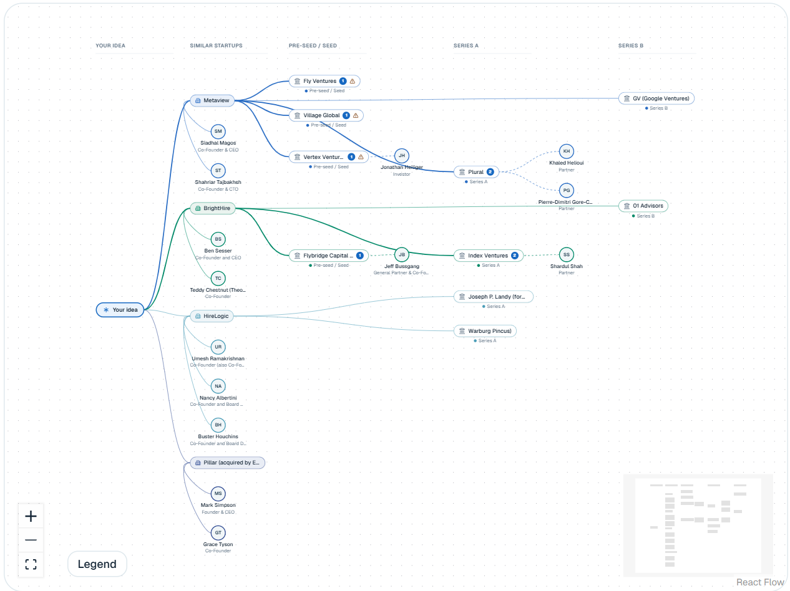
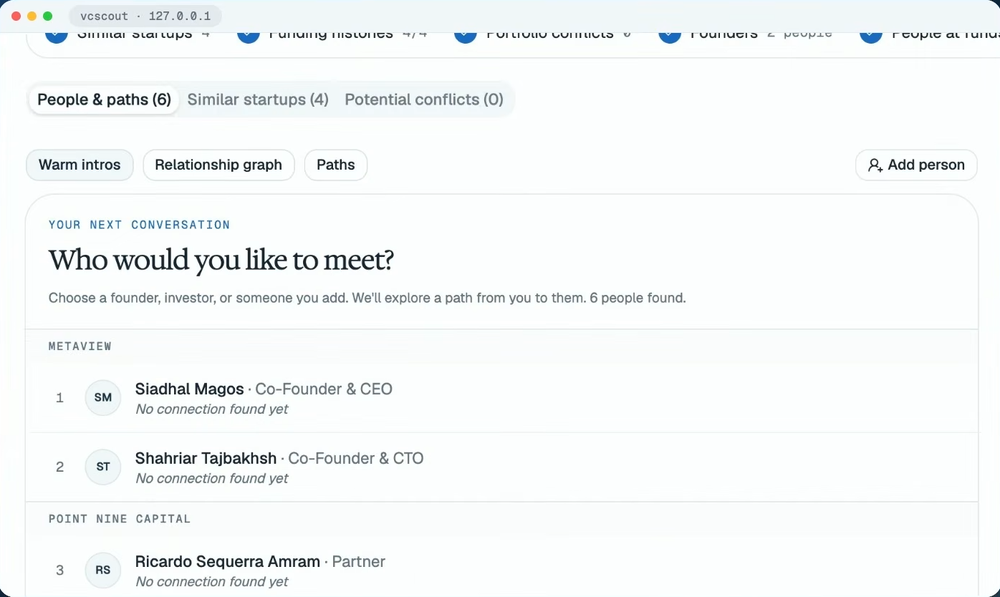
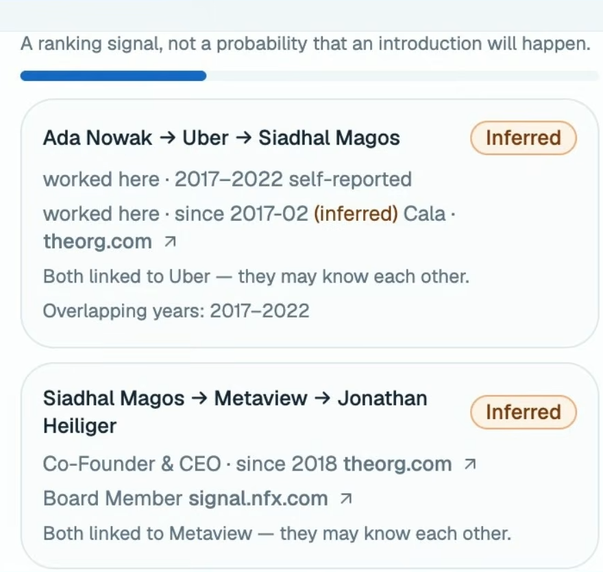
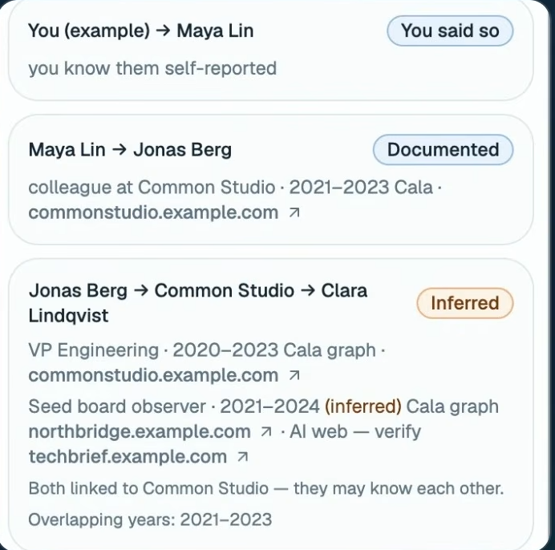
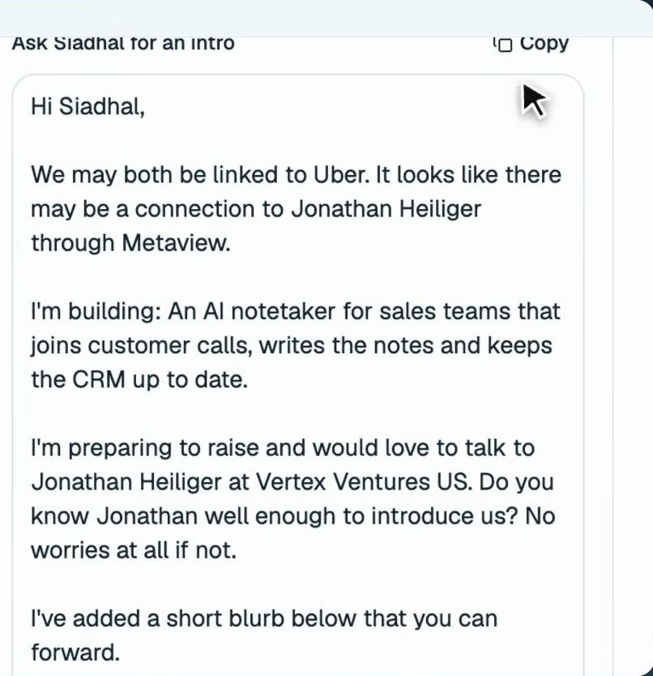

✱vcscout.
Funding paths for first-time founders, built on Cala's sourced data on companies, rounds, investors and people.
Team ScoobaNi · vcscout.onrender.com

A first check from a fund with a small network and no follow-on record can be a dead end: at Series A the founder is back to cold outreach.
Source: Carta, VC Fund Performance report (2024), as cited in the VCScout demo
Not who says they invest in AI, but who actually led rounds for comparable startups.
Which seed investors connect to whoever led the Series A of the same companies.
Who sits between me and that investor: shared employers, schools, boards.
Cala's brief named this first: "helping founders find the investors who actually take the lead in funding companies like theirs."
Describe your startup. VCScout maps the investors behind companies like yours, following one old idea: six degrees of separation.
A fresh Cala query takes about a minute




Your idea → similar startups → their founders → funds → partners, from Pre-seed to Series B.
Highlight one company to trace its story, or select a fund to see the partners behind the deal.


Two handshakes, not six.
Ada is a fictional founder · links from saved Cala results
Every link carries a label and a source to check:
You said soyou added it yourself
Documentedstated in a Cala source
Inferredoverlapping years at the same place
The score is a ranking signal, not a probability that an intro will happen.



from one sentence about your idea
lead vs participant, stage, date, amount, source
the same company's next round reveals follow-on reach
roles and employers with years
shared employers and boards, each hop with its source
Web search returns pages. Cala returns structured, sourced, connected records, and that's the only reason a path like Ada → Uber → Metaview → investor can be found and shown with its sources.
first-time founders raising their first round, and thinking two rounds ahead
live web app, end to end: idea → comparables → paths → intro draft
six degrees of separation on funding data: paths, not lists
companies, rounds, investors and people, connected and sourced
vcscout.onrender.com · demo: youtu.be/nJiaRHkBwz8